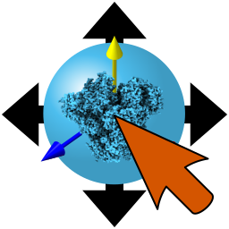
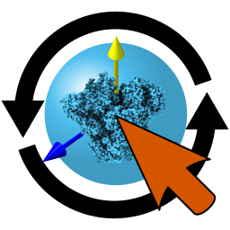
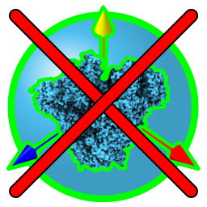
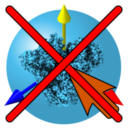
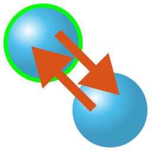
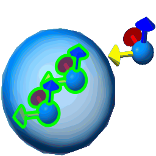
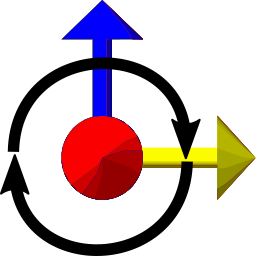
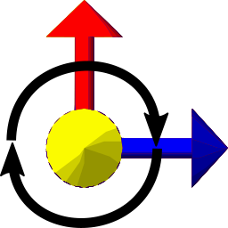
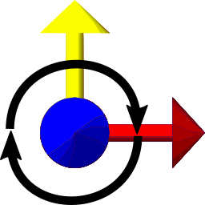

The ArtiaX Toolbar is seperated into 11 parts with different buttons used to perform actions with a simple click.
The general section is only used to launch the plugin and the help menu.
| icon | description | command equivalent |
| start ArtiaX | artiax start | |
| open help | open help:user/artiax_index.html |
The markers, axes, and surface sections are used to show or hide different parts of the particle markers.
| icon | description | command equivalent |
| show markers | artiax show | |
| show axes | ||
| show surface | ||
| hide markers | artiax hide | |
| hide axes | ||
| hide surface |
The View section orients the camera to the selected view.
| icon | description | command equivalent |
| orient camera such that the x-axis is to the right and y-axis is up | artiax view xy | |
| orient camera such that the x-axis is to the right and z-axis is up | artiax view xz | |
| orient camera such that the y-axis is to the right and z-axis is up | artiax view yz |
The Movement section allows for changing the right button mousemode to selecting models or reorienting the camera.
| icon | description |
| lets the user drag a box around models to select them | |
| rotates the camera around the cursor or particle selected as pivot | |
| translate the camera | |
| selects the particle closest to the cursor as a point to pivot around when the camera is rotated |
The Place Particles section works just like the place markers section from the right mouse tab available with standard ChimeraX, except that particles are created instead of markers if a particle list exists.
The Move Particles section changes the mouse mode to let the user translate and rotate particles. Translation and rotation can also be set for particles using the artiax particles command.
| icon | description |
| translates all particles selected with the select mouse mode | |
| rotates all particles selected with the select mouse mode | |
|  | press and hold on a particle to translate it |
|  | press and hold on a particle to rotate it |
The Delete Particles section changes the mouse mode to let the user delete particles.
| icon | description |
|  | deletes all particles selected with the select mouse mode |
|  | press on a particle to delete it |
The Selection section allows manipulating the current particle selection
| icon | description |
|  | inverts the selection of all currently visible particle lists |
|  | selects all particles inside a currently selected model with a surface. |
The Flip Particles section rotates selected particles 180 degrees around an axis.
| icon | description | command equivalent |
|  | rotates particles 180 degrees around their x-axis. | artiax flip x |
|  | rotates particles 180 degrees around their y-axis. | artiax flip y |
|  | rotates particles 180 degrees around their z-axis. | artiax flip z |